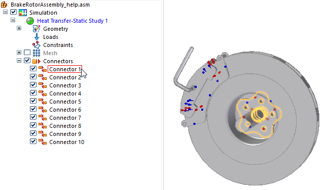
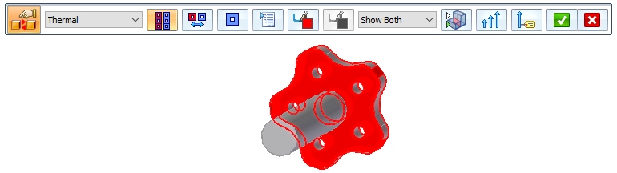
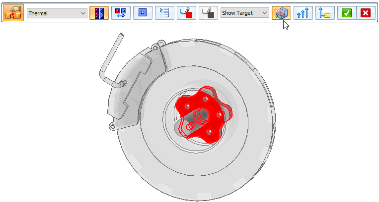
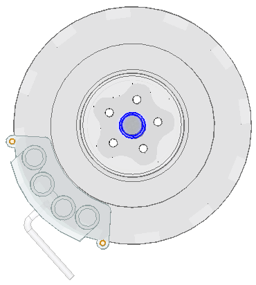
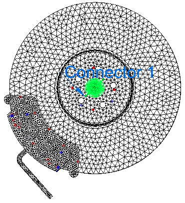

Replace target and source connection regions
You can replace the target and source regions in a glue, no penetration, or thermal connection. If the connection was created using the Select Multiple option, then you can replace as many faces and surfaces in the target and source regions as you want. Otherwise, you are prompted to replace one target and one source face or surface.
-
In the Simulation pane, locate a connection to modify, and then double-click the connector name.

The Assembly Connector command bar is displayed, and the target-source faces in the connection are shown at the points of contact. The other assembly parts are hidden.

-
From the Visibility Options list, select Show Target as the face you want to replace in the connection, and then click Toggle Hide/Transparent to view all of the unconnected parts in the assembly.

-
Use the following process to replace or keep the currently selected target face, followed by the source face.
-
For the target face(s) highlighted in red, do one of the following:
To
Do this
Replace one target face.
Click a different face or surface, and then right-click or press Enter to continue.
Replace multiple target faces.
Click as many faces or surfaces as you want to replace, then right-click or press Enter to continue.
Keep the existing target face(s).
Right-click or press Enter to skip this step.
-
For the source face(s) highlighted in blue, do one of the following:
To
Do this
Replace one source face.
Click a different face or surface, and then click Accept.
Replace multiple source faces.
Click as many faces or surfaces as you want to replace, and then click Accept.
Keep the existing source face(s).
Click Accept.

-
-
The connection update is complete when the command bar disappears. If you are done making changes, click Accept to finish.

While the command bar is open, you can zoom in to see the connector symbols on the model. Right-click to return to edit mode.
|
Target and source region connection symbols |
Purpose |
|
Red is the default color of the target face and the symbol. |
Indicates the target side of the connection. |
|
Blue is the default color of the source face and the symbol. |
Points from the source to the target side of the connection. |
You also can use the following options on the Assembly Connector command bar to modify the target and source sides of the connection:
-
Add faces or surfaces to the target or source side of a one-to-one connection you are editing.
-
Swap the target and source faces after they are selected or defined.
-
Reverse the target and source face selection order, so that you select source faces first and target faces second.
How do I
Create connectors based on assembly relationshipsCreate assembly connectors using the Auto command
Create manual connections between faces or surfaces
Change connector region direction
Learn more
Assembly connectorsTarget and source connector regions
Assembly connector handles, labels, and symbols
Glue and no penetration contact connectors
Thermal connectors
Look up more details
Auto command barAssembly Connector command bar
Assembly Connector Properties dialog box